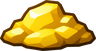
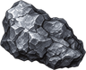
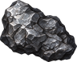

Forest Kobold
By level
Where it lives deeper in a region it is stronger. See Levels.
| Level | Hitpoints | Attack | Defence | Experience |
|---|---|---|---|---|
| 19 | 282 | 22 | 5 | 235 |
| 20 | 307 | 23 | 5 | 247 |
| 21 | 330 | 23 | 5 | 258 |
| 22 | 355 | 24 | 5 | 269 |
| 23 | 381 | 25 | 5 | 281 |
| 24 | 409 | 26 | 5 | 292 |
| 25 | 439 | 27 | 5 | 304 |
Locations
- (level 19-20)
- (level 21)
- (level 21)
- (level 19-20)
- (level 22)
- (level 21)
- (level 20)
- (level 22)
- (level 21)
- (level 22)
- (level 21)
- (level 22)
- (level 22-23)
- (level 23)
- (level 23)
- (level 23)
- (level 22)
- (level 21)
- (level 24)
- (level 24)
- (level 25)
- The Hollow Barrow: Floor 1 (level 20)
- The Hollow Barrow: Floor 2 (level 21)
- The Kesselbach Silver Mine (level 21-22)
Drops
| Item | Amount | Chance a kill |
|---|---|---|
 Gold | 10 | 25.0% |
 Chunk of Silver | 1 | 35% |
 Chunk of Iron | 1 | 40% |